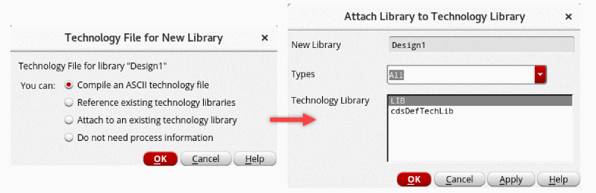
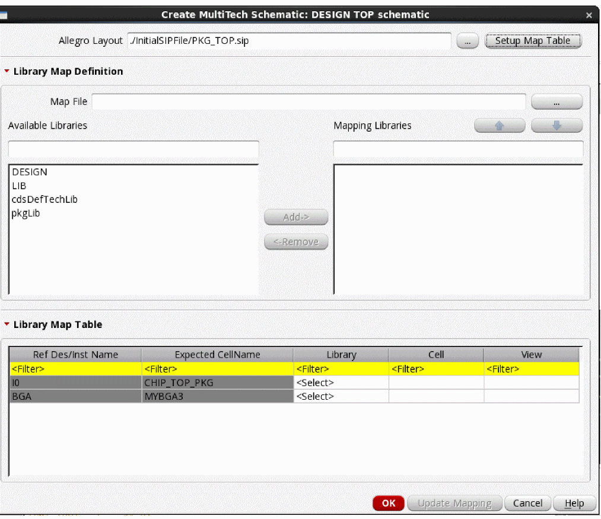

Creating a Schematic Layout from a SiP File
The Create MultiTech Schematic option in the Virtuoso Schematic Editor can be used to import the instances and the connectivity information from a SiP file to create the initial Virtuoso schematic view. Before you create a schematic, ensure that the IC, PCB, and Sigrity hierarchy paths have been set for a seamless flow of tasks in the Virtuoso Multi-Technology Solution environment.
To create a schematic from a SiP file:
-
Run vmtLibImport to create the technology and cell library.
vmtLibImport "<SiP file>" "<library>" ?importTechOnly t
vmtLibImport "<SiP file>" "<library>" ?importDra t ?createSymbols t
-
Create a new unified library and attach it to an existing library.
 - Create a schematic cellview in the new library.
- Open the new schematic cellview.
- Click Module – Auto Create Pins to create pins in the package schematic only if creating the schematic from scratch.
- Click Module – Create MultiTech Schematic. The Create MultiTech Schematic Form opens.
-
Specify path to the SiP file in the Allegro Layout field.
 - Click Setup Map Table. The information from the SiP file is loaded in the Library Map Table section. Each instance in the SiP file is added to a separate row in the table.
-
Map libraries using one of the following methods:
- Select the required libraries from the Available Libraries list and click Add to move them to the Mapping Libraries list. The sequence of libraries in the Mapping Libraries list defines the priority in which the libraries are used for mapping cells. Use the up and down buttons to change the sequence.
- Fill the Library Map Table manually by specifying the libraries, cells, and views to be mapped.
- Specify the Map File in the Library Map Definition section. After each successful mapping update run, a mapping file is created, which can be reused in a new run. You can also use Text Editor to create a mapping file.
-
Click Update Mapping.
All instances in the SiP file are mapped to the library cells. - Click OK. The initial schematic is created using the instances and the connectivity from the SiP file. The top-level pins are created automatically. They are identified based on the cells that are declared as IO in a SiP file, for example, BGA.
After checking and updating the schematic, you can proceed with the implementation flows by either bringing the initial layout data from the same SiP file or by running Generate From Source in the Virtuoso or Allegro platforms.
Related Topics
Create MultiTech Schematic Form
Return to top